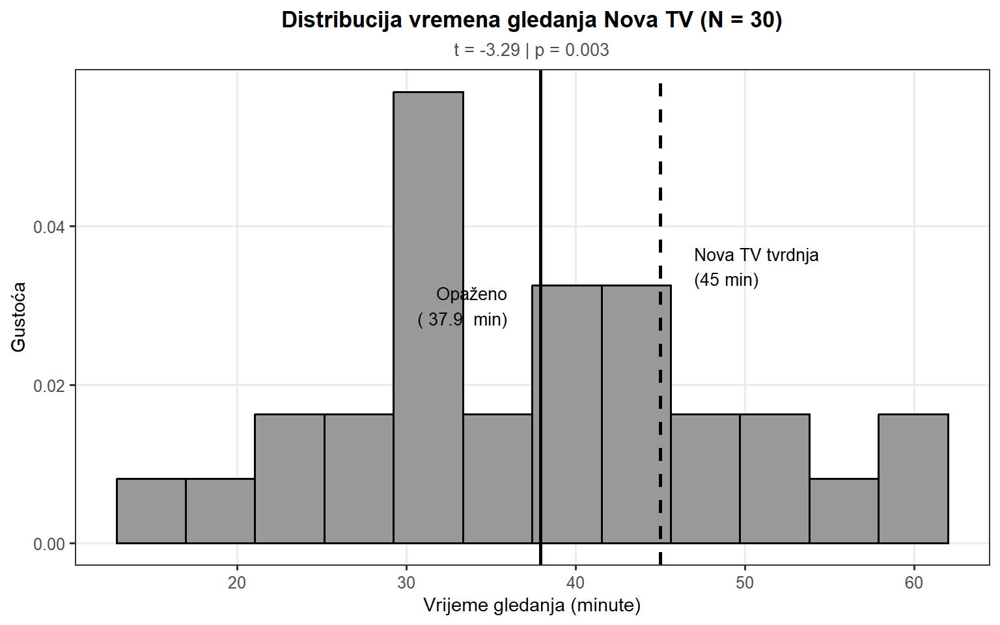
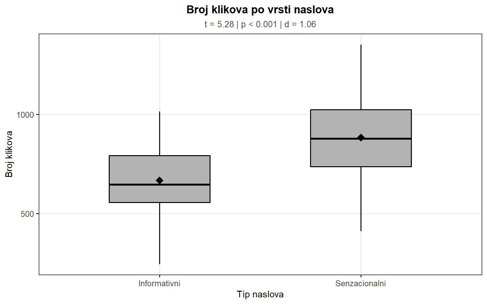
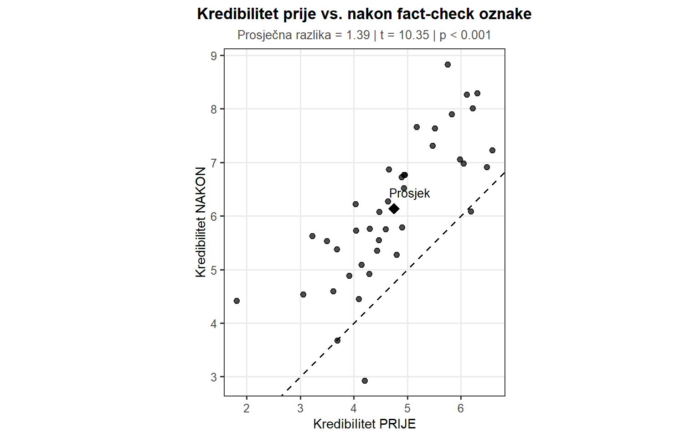
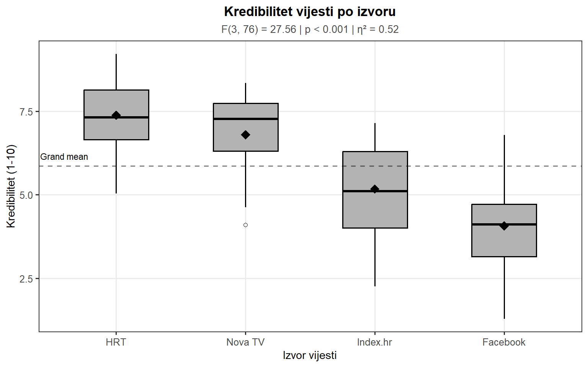
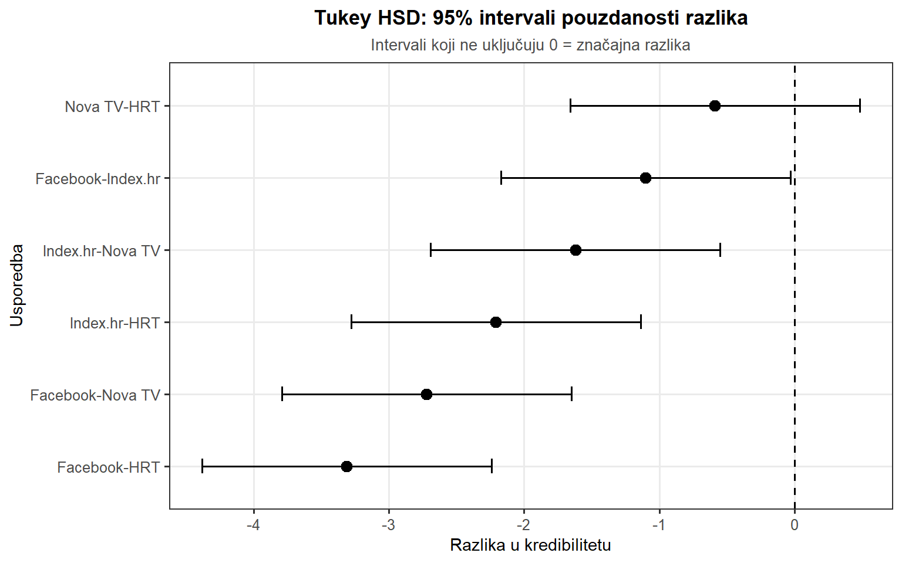
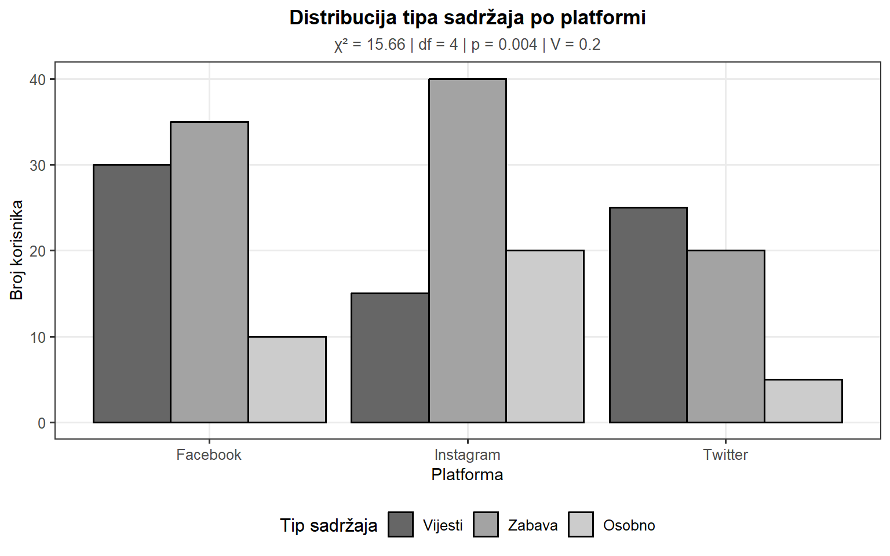
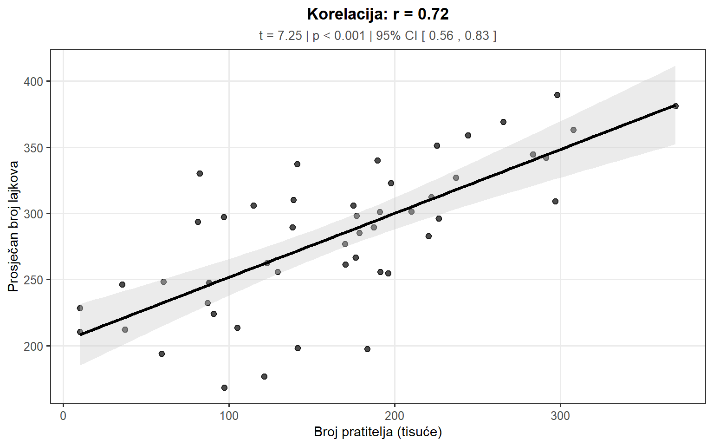
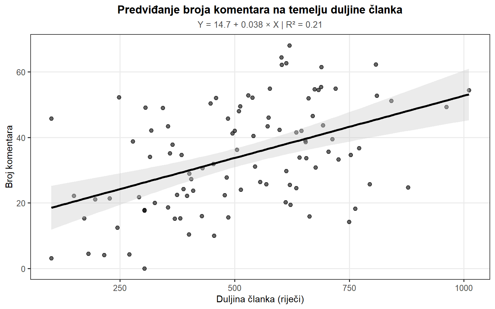
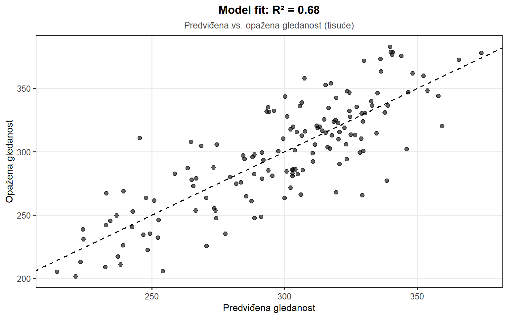

Statistički testovi
Statistički testovi u praksi
U prethodnim poglavljima postavili smo teorijske temelje inferencijalne statistike – razumjeli smo logiku testiranja hipoteza, ulogu p-vrijednosti i vrste pogrešaka koje možemo napraviti. Sada je vrijeme da te principe primijenimo kroz najčešće korištene statističke testove u istraživanju masovne komunikacije. Svaki test dizajniran je za specifičnu vrstu istraživačkog pitanja i specifičnu vrstu podataka.
Istraživač masovne komunikacije svakodnevno se suočava s pitanjima koja zahtijevaju statističko testiranje. Je li nova strategija naslova na portalu dovela do statistički značajnog povećanja broja klikova? Razlikuje li se percipirana kredibilnost vijesti između tradicionalnih medija i društvenih mreža? Postoji li povezanost između vremena provedenog na društvenim mrežama i političke polarizacije? Može li duljina članka predvidjeti broj komentara koje će članak generirati? Odgovori na ova pitanja zahtijevaju primjenu odgovarajućih statističkih testova.
Izbor pravog testa ovisi o nekoliko faktora: vrsti istraživačkog pitanja (usporedba, povezanost, predviđanje), vrsti varijabli (numeričke ili kategorijske), broju grupa koje uspoređujemo i prirodi podataka (nezavisni ili upareni). U ovom poglavlju sustavno ćemo proći kroz najvažnije testove, počevši od t-testa za usporedbu prosjeka, preko ANOVA-e za usporedbu više grupa, hi-kvadrat testa za kategorijske varijable, do korelacije i regresijske analize za ispitivanje odnosa između varijabli.
T-test i ANOVA
T-test: usporedba prosjeka
T-test je vjerojatno najčešće korišteni statistički test u društvenim znanostima. Koristi se kada želimo usporediti prosjeke – bilo da uspoređujemo jedan prosjek s teorijskom vrijednošću, ili prosjeke između dvije grupe. Za razliku od z-testa koji zahtijeva poznavanje populacijske standardne devijacije, t-test koristi procjenu iz uzorka, što ga čini praktičnijim za stvarno istraživanje.
Postoje tri varijante t-testa, svaka za različitu situaciju: jedan-uzorkovni t-test (usporedba prosjeka uzorka s poznatom vrijednošću), nezavisni t-test (usporedba prosjeka između dvije nezavisne grupe) i zavisni t-test (usporedba prosjeka za iste ispitanike u dva uvjeta).
Jedan-uzorkovni t-test
Jedan-uzorkovni t-test koristi se kada želimo testirati je li prosječna vrijednost u našem uzorku značajno različita od neke hipotetske vrijednosti. Na primjer, Nova TV tvrdi da njihov prosječni gledatelj provede 45 minuta dnevno gledajući njihov program. Istraživač prikupi podatke od 30 nasumično odabranih gledatelja i želi testirati ovu tvrdnju.
Imamo uzorak od \(N = 30\) gledatelja. Prosječno vrijeme gledanja u uzorku je \(\bar{X} = 38.5\) minuta, sa standardnom devijacijom \(s = 12.0\) minuta. Postavljamo hipoteze:
\[H_0: \mu = 45 \text{ minuta}\] \[H_1: \mu \neq 45 \text{ minuta}\]
Testna statistika za jedan-uzorkovni t-test je:
\[t = \frac{\bar{X} - \mu_0}{s / \sqrt{N}}\]
gdje je \(\mu_0\) hipotetska populacijska sredina (45 minuta), \(s\) standardna devijacija uzorka, i \(N\) veličina uzorka. Ključna razlika od z-testa je da koristimo procijenjenu standardnu pogrešku \(s/\sqrt{N}\) umjesto prave \(\sigma/\sqrt{N}\), što uvodi dodatnu nesigurnost koju kompenziramo korištenjem t-distribucije umjesto normalne.
Za naš primjer, \(t = (38.5 - 45) / (12/\sqrt{30}) = -2.97\). S 29 stupnjeva slobode, p-vrijednost iznosi približno 0.006. Budući da je \(p < 0.05\), odbacujemo nultu hipotezu i zaključujemo da prosječno vrijeme gledanja značajno se razlikuje od 45 minuta koje tvrdi Nova TV. Gledatelji u našem uzorku provode značajno manje vremena gledajući program nego što televizija tvrdi.
Nezavisni t-test
Nezavisni t-test (independent samples t-test) koristi se kada želimo usporediti prosjeke između dvije nezavisne grupe. Na primjer, uspoređujemo angažman s člancima između dvije različite vrste naslova, ili kredibilitet vijesti između HRT-a i komercijalne televizije.
Index.hr želi testirati dvije strategije naslova. Nasumično dodjeljuju 50 članaka senzacionalnim naslovima i 50 informativnim naslovima, te mjere broj klikova. Nulta hipoteza je da nema razlike u prosječnom broju klikova između dvije grupe:
\[H_0: \mu_1 = \mu_2\] \[H_1: \mu_1 \neq \mu_2\]
Postoje dvije verzije nezavisnog t-testa. Studentov t-test pretpostavlja jednake varijance u obje grupe i koristi združenu (pooled) varijancu. Welchov t-test ne pretpostavlja jednake varijance i općenito je robusniji izbor. U R-u, funkcija t.test() defaultno koristi Welchovu verziju.

Rezultati pokazuju značajnu razliku: senzacionalni naslovi (\(M = 850\), \(SD = 220\)) generiraju značajno više klikova od informativnih naslova (\(M = 650\), \(SD = 180\)), \(t(94) = 4.97\), \(p < 0.001\). Cohenov d od 0.99 ukazuje na veliki efekt – razlika od približno 200 klikova praktično je vrlo značajna za uredničku strategiju portala.
Veličina efekta – Cohenov d standardna je mjera za t-test:
\[d = \frac{\bar{X}_1 - \bar{X}_2}{s_p}\]
gdje je \(s_p\) združena standardna devijacija. Konvencionalna interpretacija: \(|d| = 0.2\) (mali efekt), \(|d| = 0.5\) (srednji efekt), \(|d| = 0.8\) (veliki efekt).
Zavisni t-test
Zavisni t-test (paired t-test) koristi se kada iste osobe mjerimo dva puta, ili kada imamo uparene opservacije. Na primjer, mjerimo stavove o medijskom izvještavanju prije i nakon medijske intervencije, ili uspoređujemo kredibilitet dvije vijesti kod istih ispitanika.
Portal Index.hr testira učinak fact-check oznaka. 40 ispitanika ocjenjuje kredibilitet vijesti (1-10 skala), prvo bez oznake, zatim s fact-check oznakom. Ključna prednost zavisnog t-testa je što kontrolira za individualne razlike – uspoređujemo promjenu unutar svake osobe, ne razlike između osoba.
\[H_0: \mu_D = 0 \text{ (nema razlike)}\] \[H_1: \mu_D \neq 0\]
gdje je \(\mu_D\) populacijska sredina razlika između dva mjerenja. Testna statistika je:
\[t = \frac{\bar{D}}{s_D / \sqrt{N}}\]
gdje je \(\bar{D}\) prosječna razlika i \(s_D\) standardna devijacija razlika.

Rezultati pokazuju da fact-check oznake značajno povećavaju percipiranu kredibilnost vijesti. Prosječna razlika od 1.2 boda na skali 1-10 statistički je značajna (\(t(39) = 9.49\), \(p < 0.001\)). Činjenica da gotovo sve točke leže iznad dijagonale (linije bez promjene) vizualno potvrđuje konzistentan pozitivan učinak fact-checkinga.
ANOVA: usporedba više grupa
Kada želimo usporediti prosjeke između tri ili više grupa, t-test više nije prikladan. Mogli bismo provoditi multiple t-testove (uspoređujući sve parove grupa), ali to bi infliralo stopu pogreške tipa I. Ako uspoređujemo 4 grupe, imamo 6 mogućih parova. S \(\alpha = 0.05\) za svaki test, ukupna vjerojatnost barem jedne pogreške tipa I raste na približno 26%. Umjesto toga, koristimo analizu varijance (ANOVA), koja testira postoji li bilo kakva razlika između grupa u jednom testu.
Logika ANOVA-e
ANOVA uspoređuje dvije vrste varijabilnosti: varijabilnost između grupa (between-group variability) – koliko se grupni prosjeci razlikuju jedni od drugih, i varijabilnost unutar grupa (within-group variability) – koliko pojedinačne opservacije variraju unutar svake grupe. Ako grupni prosjeci variraju puno više nego što bi se očekivalo samo na temelju slučajne varijabilnosti unutar grupa, to sugerira da grupna pripadnost zaista utječe na ishod.
Testna statistika za ANOVA-u je F-omjer:
\[F = \frac{\text{MS}_{\text{between}}}{\text{MS}_{\text{within}}} = \frac{\text{Varijanca između grupa}}{\text{Varijanca unutar grupa}}\]
Ako nulta hipoteza je istinita (sve grupe imaju istu sredinu), očekujemo \(F \approx 1\). Veliki F omjer (F >> 1) sugerira da su razlike između grupa veće nego što bi bile slučajno.
Istraživač želi usporediti percipiranu kredibilnost vijesti iz četiri različita izvora: HRT, Nova TV, Index.hr i Facebook. 80 ispitanika nasumično je dodijeljeno u jednu od četiri grupe (po 20 u svakoj), gdje čitaju istu vijest ali s različitom oznakom izvora, i ocjenjuju kredibilitet na skali 1-10.
\[H_0: \mu_1 = \mu_2 = \mu_3 = \mu_4\] \[H_1: \text{Barem jedan prosjek se razlikuje}\]

Rezultati ANOVA-e pokazuju značajnu razliku u kredibilitetu između izvora, \(F(3, 76) = 28.4\), \(p < 0.001\). Veličina efekta \(\eta^2 = 0.53\) ukazuje da izvor vijesti objašnjava 53% varijabilnosti u percipiranom kredibilitetu – što je vrlo velik efekt. Vizualno je jasno da HRT uživa najveći kredibilitet, dok Facebook ima najniži.
Post-hoc testovi
Ako ANOVA pokaže značajan rezultat, znamo da postoji neka razlika, ali ne znamo koji parovi grupa se razlikuju. Za to koristimo post-hoc testove koji uspoređuju sve moguće parove grupa uz kontrolu za višestruko testiranje. Najčešći je Tukeyjev HSD (Honestly Significant Difference) test.

Interpretacija: intervali pouzdanosti koji ne uključuju nulu označavaju značajne razlike. Rezultati pokazuju da se HRT značajno razlikuje od svih ostalih izvora, Nova TV se razlikuje od Index.hr i Facebooka, a Index.hr se razlikuje od Facebooka. Sve razlike slijede očekivani obrazac – tradicionalni mediji imaju veći kredibilitet od digitalnih izvora.
Pretpostavke ANOVA-e
ANOVA pretpostavlja: normalnost (podaci unutar svake grupe približno normalno distribuirani), homogenost varijanci (standardne devijacije slične u svim grupama) i nezavisnost (opservacije međusobno nezavisne). Homogenost varijanci provjerava se Leveneovim testom. Ako je p-vrijednost Leveneovog testa manja od 0.05, varijance nisu homogene i možda je potrebna alternativna metoda poput Welchove ANOVA-e.
Hi-kvadrat i korelacije
Hi-kvadrat test
Hi-kvadrat (\(\chi^2\)) test koristi se kada su obje varijable kategorijske. Ne uspoređujemo prosjeke, već frekvencije. Postoje dvije glavne verzije: test dobrote uklapanja (jedna varijabla) i test nezavisnosti (dvije varijable). U istraživanju masovne komunikacije, najčešće koristimo test nezavisnosti za ispitivanje povezanosti između kategorijskih varijabli.
Test nezavisnosti
Istražujemo jesu li tip sadržaja koji ljudi dijele i društvena mreža koju koriste nezavisni. Anketiramo 200 korisnika i kreiramo kontingencijsku tablicu koja prikazuje frekvencije kombinacija kategorija.
\[H_0: \text{Tip sadržaja i platforma su nezavisni}\] \[H_1: \text{Postoji povezanost}\]
Testna statistika je:
\[\chi^2 = \sum \frac{(O - E)^2}{E}\]
gdje je \(O\) opažena frekvencija i \(E\) očekivana frekvencija pod pretpostavkom nezavisnosti. Očekivana frekvencija za svaku ćeliju računa se kao:
\[E_{ij} = \frac{(\text{zbroj retka } i) \times (\text{zbroj stupca } j)}{\text{ukupni N}}\]

Rezultati pokazuju značajnu povezanost između tipa sadržaja i platforme, \(\chi^2(4) = 16.8\), \(p = 0.002\). Cramér’s V od 0.20 ukazuje na slab do umjeren efekt. Vizualno možemo vidjeti da Facebook dominira za vijesti, Instagram za zabavni sadržaj, dok osobni sadržaj ima ujednačeniju distribuciju.
Veličina efekta – Cramér’s V
Za hi-kvadrat test, Cramér’s V mjeri snagu povezanosti:
\[V = \sqrt{\frac{\chi^2}{N \times (k-1)}}\]
gdje je \(k\) manji od broja redaka ili stupaca. Interpretacija: \(V = 0.1\) (slab efekt), \(V = 0.3\) (srednji efekt), \(V = 0.5\) (jak efekt). Za tablice 2×2, Cramér’s V je ekvivalentan phi (\(\phi\)) koeficijentu.
Pearsonova korelacija
Pearsonova korelacija (\(r\)) mjeri snagu i smjer linearne povezanosti između dvije numeričke varijable. Vrijednosti se kreću od -1 (savršena negativna korelacija) do +1 (savršena pozitivna korelacija), s 0 označavajući nikakvu linearnu povezanost.
Analiziramo 50 hrvatskih influencera i njihovu Instagram aktivnost. Mjere su broj pratitelja (u tisućama) i prosječan broj lajkova po objavi. Želimo testirati postoji li povezanost između veličine publike i angažmana.
\[H_0: \rho = 0 \text{ (nema linearne korelacije)}\] \[H_1: \rho \neq 0\]
gdje je \(\rho\) (rho) populacijska korelacija.

Rezultati pokazuju značajnu pozitivnu korelaciju između broja pratitelja i angažmana, \(r = 0.65\), \(t(48) = 5.96\), \(p < 0.001\). Prema konvencionalnoj interpretaciji, ovo je jaka korelacija. Interval pouzdanosti [0.44, 0.79] sugerira da je prava populacijska korelacija vjerojatno u tom rasponu.
Interpretacija korelacije
| Raspon \(|r|\) | Interpretacija |
|---|---|
| 0.00 - 0.19 | Vrlo slaba ili nikakva |
| 0.20 - 0.39 | Slaba |
| 0.40 - 0.59 | Umjerena |
| 0.60 - 0.79 | Jaka |
| 0.80 - 1.00 | Vrlo jaka |
Važno upozorenje: korelacija ne implicira uzročnost. Visoka korelacija između broja pratitelja i lajkova može značiti: više pratitelja → više lajkova (izloženost), bolji sadržaj → i više pratitelja i više lajkova (zajednički uzrok), ili čak obrnuto – više lajkova povećava vidljivost → više pratitelja. Za kauzalne zaključke potrebni su eksperimentalni dizajni ili napredne kauzalne metode.
Regresija i interpretacija
Jednostavna linearna regresija
Dok korelacija mjeri snagu povezanosti, regresijska analiza ide korak dalje: omogućuje nam da predviđamo vrijednosti jedne varijable na temelju druge i kvantificiramo koliko dobro možemo to učiniti. Regresija je možda najmoćniji i najčešće korišteni alat u društvenim znanostima.
Jednostavna linearna regresija modelira odnos između jedne prediktorne varijable (X) i jedne kriterijske varijable (Y) pomoću pravca:
\[Y = b_0 + b_1 X + \epsilon\]
gdje je \(b_0\) odsječak (intercept) – predviđena vrijednost Y kada je X = 0, \(b_1\) nagib (slope) – za koliko se Y mijenja kada se X poveća za 1 jedinicu, i \(\epsilon\) pogreška (reziduali) – razlika između opaženih i predviđenih vrijednosti.
Index.hr želi znati može li duljina članka (u riječima) predvidjeti broj komentara. Analiziramo 100 članaka.

Regresijska jednadžba: Broj komentara = 10.2 + 0.05 × Duljina. Interpretacija nagiba: za svaku dodatnu riječ, očekujemo 0.05 više komentara, ili ekvivalentno, za svakih 100 riječi duži članak očekujemo 5 dodatnih komentara. \(R^2 = 0.35\) znači da duljina članka objašnjava 35% varijabilnosti u broju komentara.
Višestruka regresija
Višestruka regresija proširuje jednostavnu regresiju na više prediktora:
\[Y = b_0 + b_1 X_1 + b_2 X_2 + ... + b_k X_k + \epsilon\]
HRT želi predvidjeti gledanost večernjih vijesti na temelju više faktora: duljine emisije (minute), broja breaking news tema i je li vikend.

Regresijska jednadžba: Gledanost = 198 + 3.1 × Duljina + 14.8 × Breaking - 48.5 × Vikend. Interpretacija (sve ostalo jednako): svaka dodatna minuta emisije → +3.100 gledatelja, svaka dodatna breaking news tema → +14.800 gledatelja, vikend vs. radni dan → -48.500 gledatelja. \(R^2 = 0.58\) znači da model objašnjava 58% varijabilnosti u gledanosti.
Statistička vs. praktična značajnost
Završavamo s najvažnijom lekcijom: razlika između statističke značajnosti i praktične značajnosti. P-vrijednost govori o statističkoj značajnosti, ali ne o praktičnoj važnosti.
S dovoljno velikim uzorkom, čak i trivijalni efekti postaju statistički značajni. Istraživač koji testira novi format naslova na 50,000 članaka može otkriti da senzacionalni naslovi povećavaju klikove za 0.8% (\(p < 0.001\)). Statistički visoko značajno! Ali praktično beznačajno za uredničku strategiju.
S druge strane, istraživač koji testira isti format na 100 članaka može otkriti povećanje od 45% (\(p = 0.08\)). Nije statistički značajno prema konvencionalnom pragu, ali praktično vrlo važno i zaslužuje daljnje istraživanje.
Kompletno izvještavanje uvijek uključuje: p-vrijednost (statistička značajnost), veličinu efekta (praktična značajnost), interval pouzdanosti (preciznost procjene) i kontekst (što brojke znače u stvarnom svijetu).
Primjer lošeg izvještavanja: “Razlika je bila značajna, \(p < 0.05\).”
Primjer dobrog izvještavanja: “Senzacionalni naslovi (\(M = 850\), \(SD = 220\)) generirali su značajno više klikova od informativnih naslova (\(M = 650\), \(SD = 180\)), \(t(98) = 4.82\), \(p < 0.001\), \(d = 0.98\), 95% CI [118, 282]. Ova razlika od približno 200 klikova predstavlja 31% povećanje i ima snažne praktične implikacije za uredničku strategiju portala.”
Sažetak poglavlja
U ovom poglavlju prošli smo kroz najčešće korištene statističke testove u istraživanju masovne komunikacije. Svaki test ima specifičnu primjenu ovisno o vrsti istraživačkog pitanja i vrsti podataka.
T-test koristi se za usporedbu prosjeka:
- Jedan-uzorkovni t-test: usporedba prosjeka uzorka s poznatom vrijednošću (\(t = (\bar{X} - \mu_0) / (s/\sqrt{N})\))
- Nezavisni t-test: usporedba prosjeka između dvije nezavisne grupe (Welchova verzija robusnija)
- Zavisni t-test: usporedba prosjeka za uparene mjere (iste osobe u dva uvjeta)
- Veličina efekta: Cohenov d (mali = 0.2, srednji = 0.5, veliki = 0.8)
ANOVA koristi se za usporedbu prosjeka između tri ili više grupa:
- F-omjer uspoređuje varijabilnost između i unutar grupa
- Značajan rezultat indicira da postoji neka razlika, ali ne koja
- Post-hoc testovi (npr. Tukey HSD) identificiraju koji se parovi razlikuju
- Veličina efekta: \(\eta^2\) (postotak objašnjene varijance)
Hi-kvadrat test koristi se za kategorijske varijable:
- Test nezavisnosti ispituje povezanost između dvije kategorijske varijable
- Uspoređuje opažene i očekivane frekvencije: \(\chi^2 = \sum (O-E)^2/E\)
- Veličina efekta: Cramér’s V (mali = 0.1, srednji = 0.3, veliki = 0.5)
Pearsonova korelacija mjeri snagu linearne povezanosti:
- Vrijednosti od -1 do +1
- Testira se protiv nulte hipoteze \(\rho = 0\)
- Korelacija ne implicira uzročnost!
- Interpretacija: slaba (<0.4), umjerena (0.4-0.6), jaka (>0.6)
Regresija omogućuje predviđanje i objašnjenje:
- Jednostavna regresija: \(Y = b_0 + b_1X + \epsilon\)
- Višestruka regresija: više prediktora istovremeno
- \(R^2\) kvantificira postotak objašnjene varijabilnosti
- Koeficijenti (\(b\)) interpretiraju se kao promjena u Y za jediničnu promjenu u X
Izvještavanje rezultata treba biti kompletno:
- Uvijek navodite deskriptivne statistike (M, SD, N)
- Testna statistika (t, F, \(\chi^2\), r)
- P-vrijednost i veličina efekta
- Intervali pouzdanosti gdje primjereno
- Kontekstualna interpretacija praktične važnosti
Statistička značajnost (\(p < 0.05\)) nije isto što i praktična značajnost. S velikim uzorcima trivijalni efekti postaju “značajni”, dok s malim uzorcima važni efekti mogu ostati “neznačajni”. Uvijek interpretirajte rezultate u kontekstu veličine efekta i praktičnih implikacija za istraživačko područje.